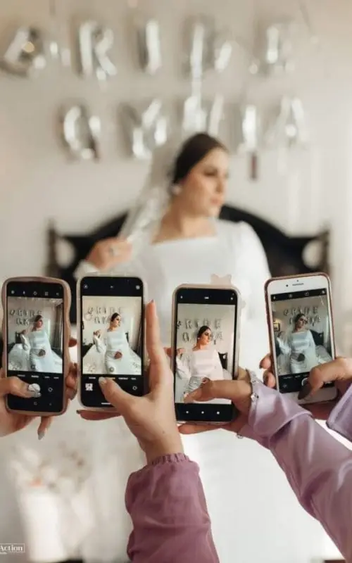
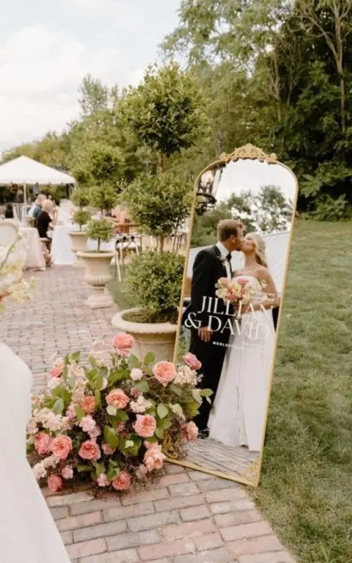
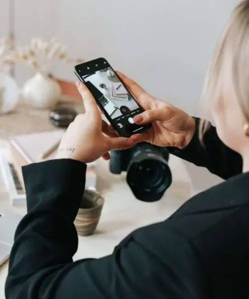
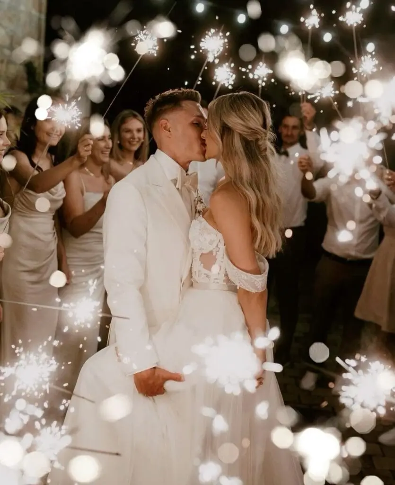
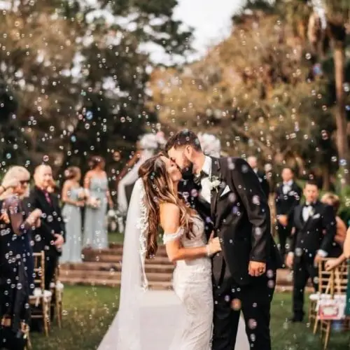
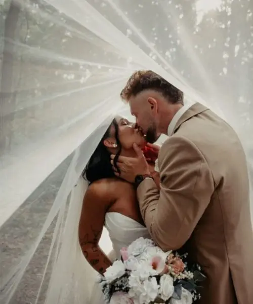

Wedding content creator, prestataire mariage tendance 2027, capture des souvenirs authentiques et des vidéos instantanées prêtes à partager sur les réseaux sociaux.
Le monde du mariage évolue sans cesse. Chaque année, de nouvelles idées, de nouveaux concepts et de nouveaux prestataires viennent enrichir l’expérience des couples. Tu te souviens du boom des cérémonies laïques, de l’arrivée des food trucks ou encore des bars à cocktails personnalisés ? Eh bien en 2027, la grande nouveauté, c’est le wedding content creator.
Aussi appelé créateur de contenu mariage, ce prestataire mariage tendance bouleverse la façon dont les couples vivent et partagent leur journée. Et si tu crois que ce rôle fait double emploi avec le photographe ou le vidéaste, détrompe-toi : son approche est complètement différente.
Dans cet article, je vais t’expliquer ce qu’est un wedding content creator, pourquoi il devient incontournable, ce qu’il fait concrètement le jour J, ses avantages, et surtout comment bien le choisir.
Qu’est-ce qu’un wedding content creator (créateur de contenu mariage) ?

Un wedding content creator est un professionnel qui capture ton mariage avec… son smartphone. Oui, pas de reflex imposant ni de caméra lourde : juste un téléphone haut de gamme, parfois accompagné d’accessoires comme un stabilisateur ou un micro-cravate.
Son rôle est très clair :
Créer des contenus authentiques (stories, reels, vidéos fun).
Capter les coulisses et les moments spontanés que le photographe ne privilégie pas toujours.
Produire du contenu instantané mariage, prêt à partager sur Instagram, TikTok ou WhatsApp.
Livrer des souvenirs mariage en 24h (et parfois même le soir-même).
En résumé, c’est ton prestataire dédié à l’instantané, au brut et au vrai.
Wedding content creator, photographe ou vidéaste : quelles différences ?
La question revient à chaque fois : pourquoi payer un créateur de contenu mariage si j’ai déjà un photographe et un vidéaste ?
👉 Parce que leurs rôles sont complémentaires, pas concurrents.
Le photographe : il sublime chaque instant, crée des images artistiques et intemporelles.
Le vidéaste : il raconte une histoire en images, avec un rendu cinématographique digne d’un film.
Le wedding content creator : il immortalise l’instant présent, capture les émotions brutes et livre du contenu rapide et fun.
Là où le photographe et le vidéaste te livreront leur travail en plusieurs semaines, voire mois, le créateur de contenu mariage te donne déjà des stories et vidéos dès le lendemain.
En clair : photographe = art, vidéaste = storytelling, wedding content creator = instantanéité.


Pourquoi le wedding content creator est la tendance mariage 2027 ?
Nous vivons dans une époque où tout se partage. Instagram, TikTok, Snapchat… Les couples aiment montrer leur bonheur, faire participer leurs proches, et revivre les moments forts de leur mariage immédiatement.
Mais le problème, c’est que le jour J, personne n’a vraiment le temps de sortir son téléphone. Tes témoins et invités préfèrent profiter de la fête. Et si tu confies la mission “filmer pour les réseaux” à ta cousine, tu risques d’avoir :
des vidéos floues,
des cadrages hasardeux,
et des souvenirs incomplets.
C’est exactement là que le wedding content creator intervient. Il connaît les codes des réseaux sociaux, il sait filmer vertical, capter la bonne lumière, choisir les bons angles. Résultat : des stories et reels mariage dignes d’un pro, que tu peux poster immédiatement.
En 2027, avec des couples de plus en plus connectés, le contenu instantané mariage devient un indispensable.
Concrètement, que fait un wedding content creator le jour J ?
Le rôle de ce prestataire est simple : te suivre tout au long de ta journée sans être envahissant. Voici quelques exemples :
Préparatifs : vidéos de ton maquillage, de ton habillage, des rires complices avec tes témoins.
Cérémonie : mini-clips de ton entrée, de vos regards échangés, des larmes discrètes dans l’assemblée.
Cocktail : ambiance détendue, invités qui trinquent, détails de la décoration, animations.
Soirée : danses, discours, surprises, fou rires… toute l’énergie de la fête.
À la fin, tu repars avec un “best of” en format reel mariage, plus plein de petites vidéos prêtes à partager.
Anecdote : la surprise des témoins
Lors d’un mariage l’été dernier, les mariés avaient choisi un wedding content creator. Pendant la soirée, leurs témoins ont préparé une danse surprise. Résultat : le lendemain, les mariés ont reçu un montage express de 30 secondes. Ils l’ont posté immédiatement sur Instagram.
Le reel a explosé : des centaines de likes, des commentaires enthousiastes, et surtout des proches absents qui ont pu vivre ce moment comme s’ils y étaient.
C’est exactement ça, la force d’un créateur de contenu mariage : il rend ton mariage vivant au-delà du jour J.
Les avantages d’un créateur de contenu pour son mariage
Faire appel à un wedding content creator présente de nombreux atouts :
- Rapidité : souvenirs livrés en 24h.
- Authenticité : des vidéos spontanées, naturelles, sans pose forcée.
- Complémentarité : il ne remplace pas le photographe/vidéaste, il les complète.
- Fun : des coulisses, des rires, des instants “backstage”.
- Partage : tu peux montrer ton mariage à tes proches éloignés ou absents.
Est-ce que ça vaut vraiment le coup ?
Oui, c’est un budget supplémentaire. Mais pense aux bénéfices :
Plus besoin d’attendre plusieurs mois pour revivre ton mariage.
Du contenu social media mariage prêt à l’emploi.
Des souvenirs “vivants” qui complètent ton album photo.
Si tu es un couple connecté, actif sur Instagram ou TikTok, le wedding content creator devient un allié indispensable.

Est-ce que c’est pour tout le monde ?
Pas nécessairement.
Si tu n’utilises jamais les réseaux sociaux, ce n’est pas une priorité.
Si tu aimes les vidéos rapides, fun et brutes, tu vas adorer.
Si tu es influenceur, entrepreneur ou créateur de contenu, c’est carrément incontournable.
Les erreurs à éviter
Penser qu’il remplace photographe/vidéaste. Faux : il est complémentaire.
Choisir uniquement pour le prix, sans regarder le style.
Ne pas prévoir en amont les moments importants à filmer.


Comment bien choisir son wedding content creator ?
1. Vérifier son style
Chaque créateur a sa patte. Regarde ses reels, ses stories, ses montages.
2. Demander sa rapidité de livraison
Certains livrent le soir-même, d’autres sous 48h.
3. Clarifier son matériel
Même s’il travaille au smartphone, il peut avoir stabilisateur, micro ou petite lumière.
4. Parler de ton planning
Explique-lui les moments clés à ne pas manquer (entrée, discours, surprises).
5. Vérifier son entente avec les autres prestataires
Un mariage fluide repose sur la bonne collaboration entre photographe, vidéaste et content creator.
En bref,
Le wedding content creator est le prestataire mariage tendance 2027 par excellence. Il capture des souvenirs authentiques, livre des vidéos instantanées et permet aux mariés de partager leur journée dès le lendemain.
Complémentaire au photographe et au vidéaste, il devient un acteur clé de l’expérience mariage moderne. Dans quelques années, parie avec moi : on ne pourra plus imaginer un mariage sans son créateur de contenu mariage. 😉
Lovely Day Event c'est plusieurs types de prestations
L'organisation de mariage
Je vais intervenir sur toutes les étapes de vos préparatifs et vous guider dans vos choix. Je suis force de proposition pour que votre mariage ne ressemble qu’à vous.
Coordination le jour J
Je serai le chef d’orchestre pour gérer les différents prestataires, la mise en place de votre décoration et le déroulement de cette belle journée.
Décoration de mariage
Créative et passionnée, je suis certifiée Wedding Designer et je conçois une ambiance scénographique qui correspond au thème de votre mariage. La décoration est comprise dans l'accompagnement Signature, ou proposée en option avec la coordination du jour J.